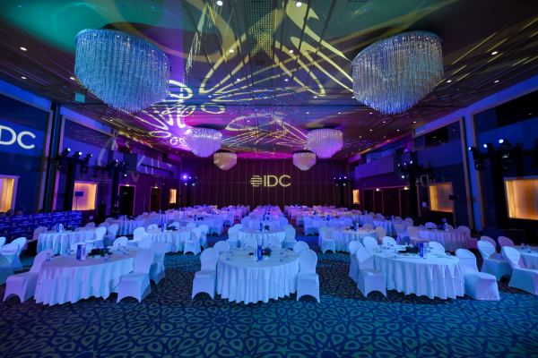

Conferences · Tech
IDC CIO Summit Qatar 2026
- Dates
- Venue
- Mondrian Doha
- Location
- Doha, Qatar
- Format
- In-person
- Category
- Tech
- Industry
- IT / Enterprise technology
- Organiser
- IDC
- Official website
- https://event.idc.com/event/idc-cio-summit-qatar/
About
Theme 'The Rise of Agentic Systems'. The next edition is listed in IDC's 2027 calendars on conflicting dates (17 Nov 2027 in the 2027 calendar brochure, 25 Nov 2027 in the CIO Summit series calendar), so only the 2026 edition is recorded. Qatar dates are local (Arabia Standard Time, UTC+3).
Topics: CIO, agentic AI, digital transformation.
No organiser attendance figure found on official pages (23 Nov 2026). Ranked by an estimated size tier 'small' (our judgement from format and scale, not an official number).